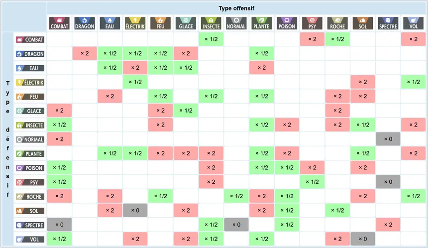
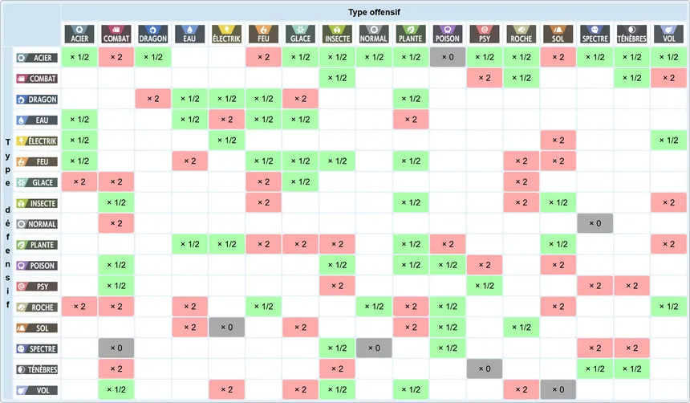
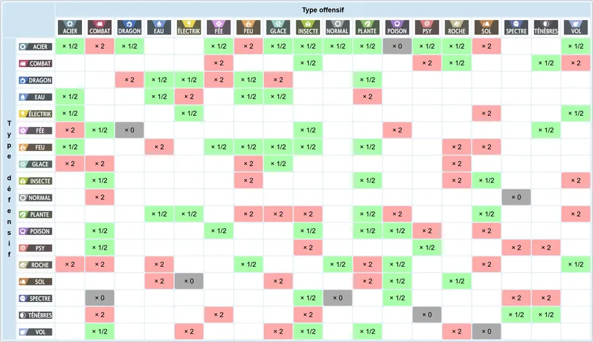
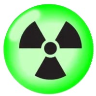

En première génération
En 1ère génération (R/V/B/J), il existait un total de 15 types : normal, plante, feu, eau, éléctik, combat, psy, roche, sol, poison, vol, glace, insecte, spectre et dragon
mais la table des types était bancale en favorisant injustement le type psy qui n'avait alors aucune faiblesse (à cause d'une erreur de programmation) et en défavorisant d'autres types comme le type normal qui, à cause d'une erreur de programmation, était faible face au type roche (qui était l'un des types les plus répandus)

De la 2ème (O/A/C) à la 5ème génération (N/B, B2/N2)
La deuxième génération a apporté deux nouveaux types : acier et ténèbres
Ces 2 nouveaux types ont consolidé et amélioré la table des types de façon à équilibrer le plus possible les forces et faiblesses de chaque type. Hors de ces 2 types, la table des types initiale a été revue et les bugs ont été corrigés de façon à équilibrer les forces et faiblesses de chaque type (par exemple le type normal s'est vu enlever sa faiblesse non intentionnelle au type roche et le type psy est réellement devenu faible face aux types ténèbres, insecte et spectre).

Depuis la sixième génération (X/Y, RO/SA)
La 6ème génération a apporté un nouveau type, le type fée
Suite à cet ajout, les types ténèbres, combat et dragon se sont vus acquérir une faiblesse face à ce type. Depuis la 6g le double type fée-acier est devenu le type le plus puissant, rendant le type dragon, meilleur type en 5ème génération, moins puissant.

En génération 6bis (Uranium)
La génération 6bis est une génération non officielle qui a apporté un nouveau type exclusif à cette génération : le type nucléaire 
Ce type est en même temps super efficace contre tous les types, sauf le type acier et lui même, et faible face à tous les types sauf lui-même.
Notion importante : le STAB
Si un pokémon utilise une attaque de même type que le sien, alors la puissance de cette attaque est multipliée par 1,25.